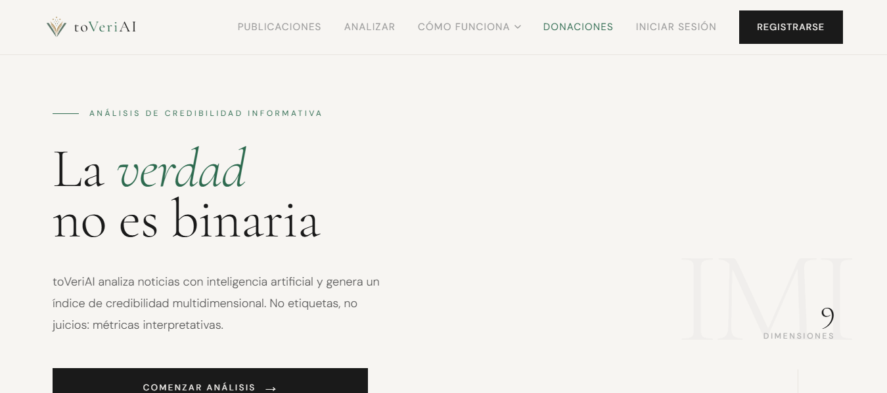

Conoce el proyecto
Presentación del producto
El problema que resuelve, la metodología IMI, las funcionalidades, la base tecnológica y la comparativa con otras alternativas.
Leer la presentación →Manual de usuario
Cómo registrarse, analizar por texto, URL o imagen, interpretar las 9 dimensiones, planes, límites y preguntas frecuentes.
Abrir el manual →Qué hay detrás
Cada análisis alimenta un dataset con el que hago fine-tuning en local. Va por la v2 (Qwen 2.5 7B).
Cerebras, Gemini, Mistral, SambaNova y Cloudflare, con failover automático gestionado por un orquestador propio.
El Índice de Métricas Interpretativas (IMI) sigue criterios de NewsGuard, IFCN y The Trust Project, y cada nota cita el artículo.
Feed público con votos, ranking de medios, avisos de cambios de fiabilidad y rachas con recompensa.
El código fuente es privado: este sitio es un escaparate del proyecto. Te lo enseño encantada en una entrevista.